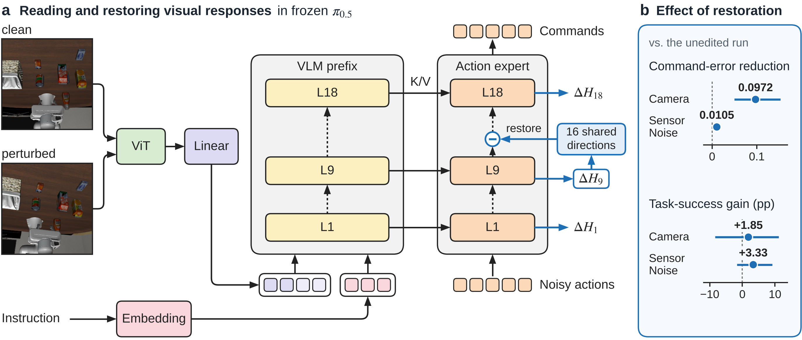
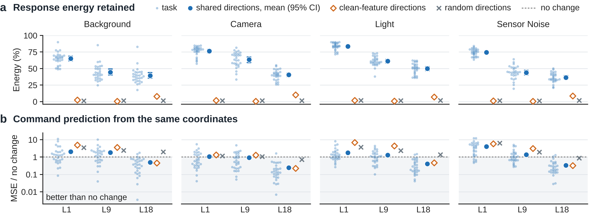
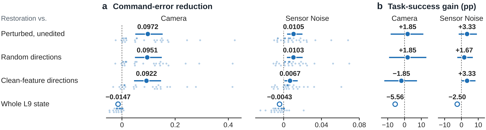
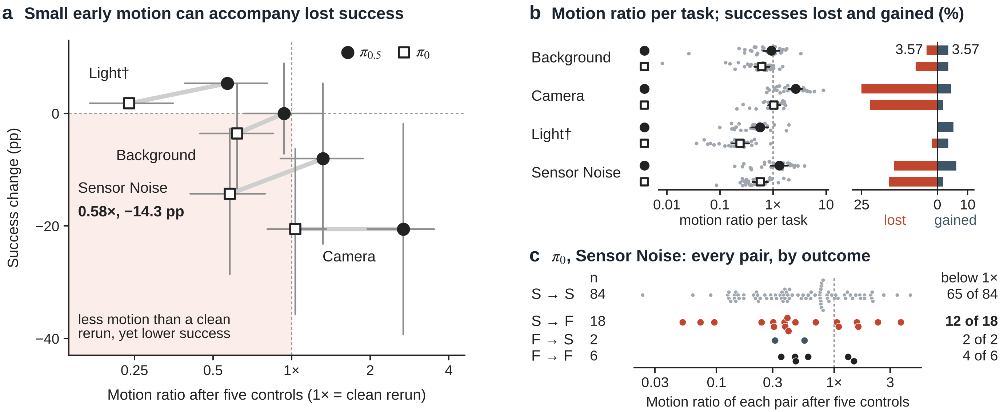
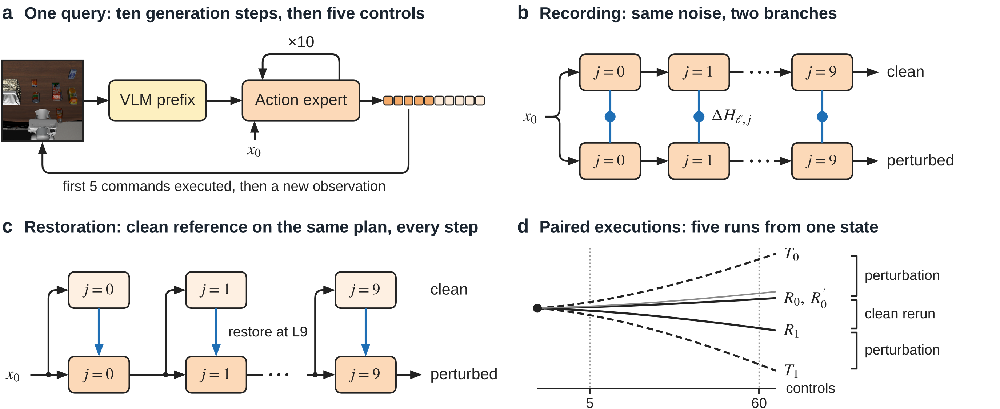

Shared Visual Responses and Task Outcomes in Vision-Language-Action Policies
A robot policy can react strongly to a visual change and still finish its task. It can also barely react and fail. We follow visual perturbations through two frozen policies, from features to commands, motion and task outcomes, and measure where reaction and failure come apart.
110 paired runs on 28 LIBERO tasks. These policies generate actions from random noise, so two unperturbed runs already move differently. That clean rerun is the yardstick used throughout.
The question
Visual changes that leave a task unchanged, such as a shifted camera or image noise, can sharply reduce the success of vision-language-action policies. To make these policies robust we need to know what a perturbation changes inside them, and how to judge a correction. We compare a clean and a perturbed run that start from the same physical state with the same policy noise, at each link of the path.

Image → features
In π0.5 we fit 16 directions per layer to the feature changes that perturbations cause. Each fit leaves out both the tasks and the perturbation family it is tested on, so directions tested on Camera responses never saw a Camera response.
On those unseen responses the 16 directions still capture most of the change. Sixteen directions fitted to clean features, or drawn at random, capture almost none. The result holds in π0, for other numbers of directions, and at a later observation of an episode.
Each bar spans the range over three layers and four perturbation families. 404 clean and perturbed pairs on 28 tasks; tasks and family held out together.

Features → commands
As a causal test, we copy clean values back along the shared directions at a middle layer (L9) during action generation, using a clean observation of the same state. Everything else stays perturbed, including the image that the later blocks still read.
On 31 held-out tasks the first five commands move toward those of the clean run. Their error falls in 25 of 27 Camera tasks and 24 of 30 Sensor Noise tasks. Sixteen directions out of 1,024 channels achieve 86.9% and 70.7% of what replacing the whole layer does. Task success is also higher, by 1.85 and 3.33 points.
The test needs a clean observation of the same state, so it is a controlled experiment and not a method one could deploy.
Distance from the clean run's commands, in command units; lower is closer to clean. A fall of 24% under Camera and 5% under Sensor Noise. 96 Camera and 120 Sensor Noise cases, six runs each.

Commands → motion → outcome
Command changes do reach the robot. After five controls their size ranks the motion change almost perfectly (rank correlation 0.95 in π0.5 and 0.97 in π0), and the link is still visible after 60 controls (0.47 and 0.41).
But how far a run moves says little about whether it fails. Ranking runs by their motion change separates failures from successes with an AUROC of 0.72 and 0.64 when all perturbation families are pooled, 0.62 and 0.55 within a family, and 0.49 for π0 under Sensor Noise. A value of 0.5 is chance.
Every dot is one of the 110 π0 runs under Sensor Noise, placed by how far it moved from its clean run after five controls, relative to a clean rerun of the same setting. Move the threshold and see which runs it flags.
Wherever the threshold sits, it flags about the same share of both groups. That is what an AUROC of 0.49 looks like.
| Outcome (clean, then perturbed) | Runs | Moved less than a clean rerun |
|---|---|---|
| Kept success | 84 | 65 |
| Lost success | 18 | 12 |
| Gained success | 2 | 2 |
| Failed in both | 6 | 4 |
Under a perturbation some clean successes fail and some clean failures succeed. The net change shows only their difference. Under Background, π0.5 loses 3.57% of successes and gains 3.57%: net success is unchanged while 7.14% of outcomes change.
A clean rerun alone changes up to 7.1% of outcomes, so changes have to be read against it. Lost successes exceed the rerun level under Camera and Sensor Noise in both policies. Gained successes do not.
Removing a headlight changes π0.5's first five commands 5.1 times as much as a dimming matched in image statistics, and both succeed in 77 of 80 runs. In a ten-condition study, a condition's mean command change ranks its mean success change (rank correlation −0.90), but across the 400 task and condition cells the correlation is −0.075.

What this gives later work
Perturbations of different kinds act on the same few directions inside the policy, and restoring those directions moves the commands. Different disturbances can be studied, and corrected, through one set of internal components.
Any correction, ours included, should be judged by paired task outcomes against clean reruns: which successes are lost, which are gained, and how that compares with what the policy's own randomness does.
Setup
All studies use frozen, LIBERO-finetuned π0.5 and π0 in the LIBERO simulator under four LIBERO-Plus perturbation families: Background, Camera, Light and Sensor Noise. Every comparison runs a setting clean and perturbed from the same initial state with the same policy noise, so that only the image differs.
| Study | What is compared | Data |
|---|---|---|
| Internal recordings (π0.5) | Clean and perturbed features and commands at the first policy query | 404 pairs on 28 tasks (536 on all 40) |
| Restoration (π0.5) | Six runs per case: clean, perturbed, restoration, two controls, whole L9 state replaced | 96 Camera and 120 Sensor Noise cases; 1,296 rollouts on 31 held-out tasks |
| Paired executions (both policies) | Two clean, two perturbed and one repeat run per setting; commands, motion after 5 and 60 controls, final success | 268 settings on 40 tasks per policy; 2,680 planned rollouts |

Reproduce
The check needs Python 3.9 or later and only the standard library. It rebuilds the task scores behind the shared-direction result, recomputes command error across the 216 restoration cases, and recomputes the paired outcomes. The repository also holds the figure scripts, the collection code and the data release.
git clone https://github.com/heeh02/adv-vla-research.git cd adv-vla-research python3 -B reproduce/paper.py --output paper-results.json
Cite
@misc{sensitivity_not_fragility_2026,
title = {Sensitivity Is Not Fragility: Shared Visual Responses and
Task Outcomes in Vision-Language-Action Policies},
author = {Author list to be added},
year = {2026}
}